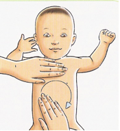

HAUSBESUCH BEI DREIMONTSKOLIKEN
Falls Ihr Kind mit Dreimonatskoliken geplagt ist, die Beine an den Körper zieht und sich rhythmisch krümmt und weint, kann ein Hebammenbesuch sehr hilfreich sein.
Ich werde Sie über alles aufklären was Blähungen und Koliken verursachen kann. Ich versuche mit Ihnen zusammen herauszufinden auf was Ihr Kind reagiert und gebe Ihnen Informationen auf was Sie aufpassen sollten.
Ich zeige ihnen zusätzlich
die Kolikmassage die Ihrem
Kind eine sehr große
Hilfe sein wird. |
 |